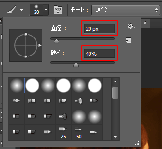

本項では、ペイントツール使って選択範囲を作成するクイックマスクについて学習します。
前項で学習した[チャンネルパネル]で新規チャンネルを作って選択範囲を作成する方法は、
黒背景に、描画色を白にした[ブラシツール]などで描画した箇所を選択範囲に設定するものでした。
この項で学習するクイックマスクモードとは、新たにチャンネルを作成せずに
元の画像に直接 [ブラシツール]などを使って描画することで、選択範囲を作成する機能です。
まず素材フォルダ「PS04」から、素材ファイル4_2_2.psdを開きましょう。
最初に画像をクイックマスクモードに変更する必要があります。
[ツールパネル]下部にある「クイックマスクモードで編集」アイコンをクリックします。
クイックマスクモードに変更すると、白から黒への2階調での描画のみになります。
描画色を「黒」に設定し、[ブラシツール]を選択します。
「ブラシプリセットピッカー」より適当なブラシの大きさを決めましょう。
見本では、以下のように設定しています。

大きさが決まったら、写真の女性を塗りつぶしていきます。
塗っている部分がマスク範囲（選択されない箇所）になります。
はみ出してしまった場合は、描画色を「白」に変更して塗り重ねることで、
はみ出た部分を消すことができます。
塗り終われば、以下のようになっています。
「クイックマスクモードで編集」のアイコンを再度クリックし、
「クイックマスクモード」を終了させましょう。
モードを終了させると、描画した箇所が選択範囲として確定されます。
[ツールパネル]から[グラデーションツール]を選択し、
女性の背景部分にグラデーションを描画しましょう。
見本では、以下のように設定しています。
（モード：オーバーレイを使用しています。詳しくは第5章、レイヤーで学習します。）
背景部分をドラッグしてグラデーションを適用します。
選択範囲が設定された背景部分にだけグラデーションが適用されます。
ブラシストロークを生かして選択範囲を作成する場合は、
前項で学習したチャンネルを使った方法よりも、
この項で学習したクイックマスクモードの方が、
元の画像を確認しながら作業できるため、より効率的です。
ただし、塗りつぶした箇所が「選択範囲外」になる点は
チャンネルパネルを使った選択範囲作成とは異なる点ですので注意が必要です。
以上でこの項の学習は終了です。
ファイルは閉じて次の項へ進んでください。